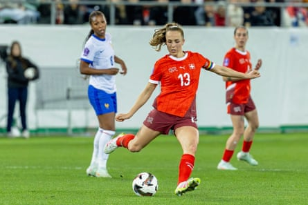
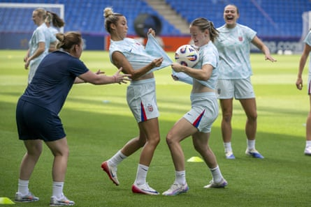

I n 1957 the Swiss newspaper Sport published a short editorial under the headline “Women’s Football?” Furious that a women’s friendly between Germany and the Netherlands was being hosted in Basel, the writer mocked: “This event is not about football, but rather should be classified as an exhibition or circus performance.”
On Wednesday evening, in front of a sell-out crowd, Switzerland will play their opening game of a home European Championship that will be one of the biggest sporting events held in the country. Sport newspaper, sadly, will be unable to chronicle the event, having folded in 1999. Life moves on you pretty fast.
The narrative arc of women’s football in Switzerland is one that will be familiar to the game’s pioneers across the continent: an agonising and incremental journey from apathy to hostility to mockery to inertia to change. Women were not allowed to play organised 11-a-side football until the late 1960s. Women’s leagues were not fully integrated into the Swiss football association until 1993. This, by the way, was three years after the north-eastern canton of Appenzell Innerrhoden became the last Swiss province to give women the vote.
And so of course the opening night of Switzerland’s summer party is a moment to sense the sheer scale of progress, to salute the countless women who toiled in anonymity to make it possible, to admire the view from what the official Uefa branding so wittily describes as the “Summit of Emotions”. Switzerland has never been one of Europe’s major women’s football nations. And yet, without the benefit of a Wembley or Old Trafford, a land of 9 million people has ensured that ticket sales will surpass those of Euro 2022 before a ball has even been kicked.
For a country where even the tournament organiser, Doris Keller, admits that “women’s football is not very developed”, where grassroots teams still fight for space amid the small pockets of usable terrain, where the term “men’s football” still draws raised eyebrows in a way it no longer does in Britain, this is an achievement in itself, whatever Pia Sundhage’s team achieve on the pitch. But of course England and the Netherlands can testify to the transformative effect of a strong home performance, the sheer rarity of these moments when a successful side can refresh the parts of society that would normally be out of reach to them.
Lia Wälti is one of Switzerland’s standout players but the hosts enter the tournament as one of the biggest unknowns.Photograph: Philipp Kresnik/SPP/Shutterstock
For all their exciting individual talent, embodied in Lia Wälti, Géraldine Reuteler and the exciting teenage playmaker Sydney Schertenleib, the Swiss go into the tournament as perhaps one of its biggest unknowns. Can they take advantage of a kind draw and surf the patriotic wave to the knockouts? Or will a leaky defence, an injury-hit squad and Sundhage’s awkward tactics implode in embarrassing fashion?
In one sense Group A – by far the weakest of the four – holds the key to the tournament, giving teams such as Belgium and Italy in Group B a viable path to the semi-finals if they can get in the slipstream of Spain. The world champions are still favourites, even if they disappointed at last summer’s Olympics and are fretting on the health of Aitana Bonmatí. But if 2023 proved anything, it is that this group of players can play through even the fiercest adversity, a self-driving car that knows how to right itself in the toughest moments.
And this is perhaps the one aspect in which Spain remain well clear of the pack. Unlike most of their rivals, Montse Tomé’s side have a clear playing identity, an established coaching tradition, basic principles that reach all the way down to grassroots level and the fiercely competitive regional junior tournaments that have provided a regular pipeline of talent to the academies. More than any other team in world football, Spain have an idea of how Spain should play.
By contrast, what is the identity of Sarina Wiegman’s England, beyond a kind of hard-running swagger? Or Christian Wück’s Germany, a team still awkwardly transitioning from old to new? Laurent Bonadei has tried to curb France’s traditional reliance on gifted individuals by dropping several big names for the tournament. Many of the medium-sized nations remain disproportionately reliant on gifted individuals.
Spain remain well clear of the pack and will not be short of support in Switzerland.Photograph: Gabriel Monnet/AP
Which is no criticism of any of these teams: by and large this is still an emerging sport, still near the start of its creative cycle, sparsely staffed and unevenly resourced. But it is fair to say that the explosion of playing talent has – for understandable reasons – not been met by a commensurate rise in the quality of coaching or ideas. As such a good proportion of success at this tournament will be defined by fitness and physicality, bolts of individual quality, rapid shifts in momentum, the teams best equipped at harnessing the vibes.
In this sense, the increasingly uncomfortable wealth gaps at European club level may work as a kind of leveller for the international game. Barcelona’s dominance of Liga F is great for the Spanish national side, but great too for players such as Poland’s Ewa Pajor and Portugal’s Kika Nazareth who have been able to develop their game at the very cutting edge of the sport. Wales would not be at this tournament without England’s WSL. Pretty much every team at this tournament have a gamechanging player who can steal the show in an instant. This is the depth Emma Hayes was referring to in her Guardian column when she predicted the highest-quality Euros we have seen.
The flip side is that there are fewer mysteries than ever. It was only two tournaments ago when a largely unknown Austria side shocked the world by coming within a penalty shootout of the final. These days virtually every player is a known quantity, their data points logged and loaded, their strengths and weaknesses neatly packaged for video. And here perhaps is one aspect in which European women’s football has stolen a decisive march on the rest of the world, recalibrating the gravity of a sport that once revolved around the US and its enviable talent system.
Bolstered by the wealth of the leading European men’s clubs, women’s football as a whole is increasingly a European-flavoured game. At the 2019 World Cup, 13 of Australia’s squad played in America; by 2023 that was down to two. A third of Hayes’s US squad for the SheBelieves Cup this year was drawn from abroad.
Norway train before facing Switzerland on the first night of the tournament.Photograph: Georgios Kefalas/AP
And when the NWSL became the first American major sporting league to abolish the player draft this year, it was a recognition of the increasingly fraught competition from European clubs for the best talent. Crystal Dunn (to Paris Saint-Germain) and Naomi Girma (to Chelsea) made the jump this year. Trinity Rodman says it will be “a matter of when” she plays abroad, and we can assume she is not envisioning a stint in the Liga MX Femenil.
All of which is predicated on the presumption of permanent, inexorable growth. But there are no guarantees here. No growth is truly permanent. And as well as being a moment to savour the pace of progress, Euro 2025 comes at a critical juncture for the women’s game, an opportunity to forestall the inevitable tapering off.
YouGov research published this week indicates that across major European nations, fewer people are intending to watch this tournament than the World Cup in Australia and New Zealand two years ago, despite the friendlier time zone. More than 80% of adults across the continent describe themselves as “not interested” in women’s football. In England, television audiences for the WSL fell 35% last season with no international tournament upon which to piggyback. All of which underlines the precarity of football’s brave new frontier. At what point does this thing hit its ceiling?
Perhaps the major conclusion to draw from the WSL television figures is the continuing importance of international football in terms of driving interest. Arsenal’s players were richly feted for beating Barcelona in May’s Champions League final, but for players such as Leah Williamson and Alessia Russo retaining the Euros would bring a different level of acclaim entirely. A first triumph since 2013 would transform the German game in a way no amount of Frauen Bundesliga marketing could ever manage.
Over to the players, then. And of course every woman who ever kicked a ball in anger has always been aware on some level that they are playing for something larger: those who came before and those who will come after, those newly converted and those yet to be convinced, the imperative in a crowded marketplace to create not only competent sport but compelling product. Perhaps, as we reflect again on our wretched Swiss correspondent from seven decades ago, this event is part exhibition and part circus. But – and here’s the rub – it is also definitely about football.